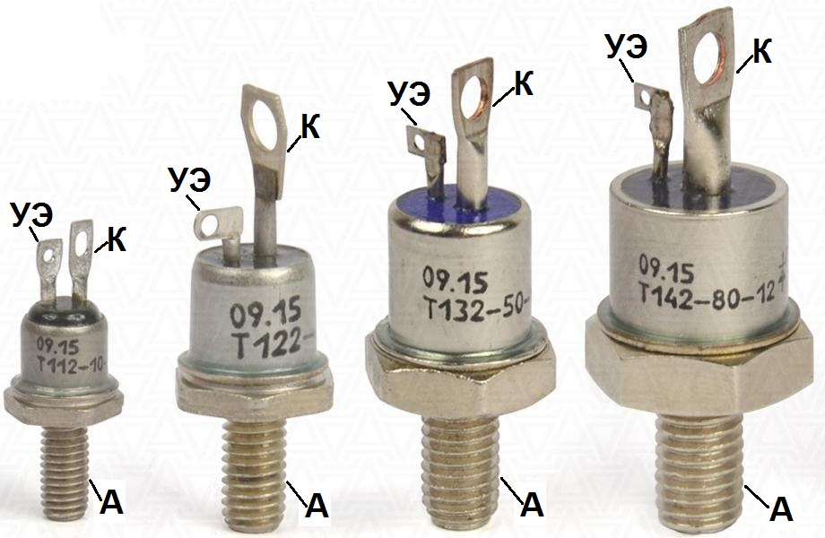
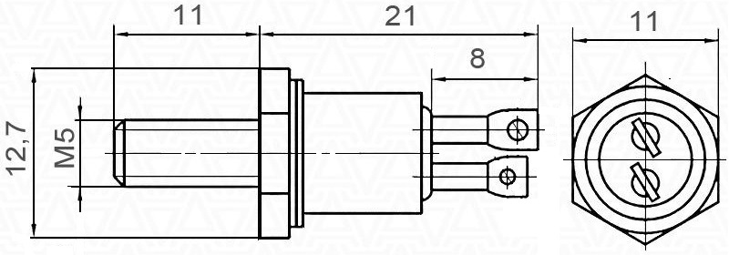
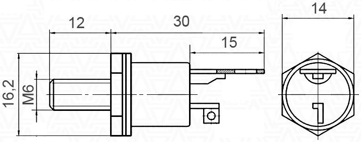

Тиристоры Т112, Т122, Т132, Т142
Тиристоры Т112, Т122, Т132, Т142 – штыревые тиристоры общего назначения, регулируют и преобразовывают постоянный и переменный ток до 80 А частотой до 500 Гц в цепях с напряжением 100 - 1600 В.

Рис. 1 - Внешний вид тиристоров Т112, Т122, Т132, Т142
Типы корпусов тиристоров: ST1, ST2, ST3, ST4. «ST» означает «stud thyristor» - штыревой тиристор. Основание тиристора является анодом, жесткий вывод - катодом. Тиристоры собирают с охладителями при помощи резьбового соединения. Чтобы электрические потери были минимальными, а отвод тепла максимальным, при сборке следует обеспечивать необходимый закручивающий момент, так называемое усилие зажатия. Для лучшего отвода тепла тиристора при сборке используют теплопроводящую пасту КПТ-8, что не является обязательным условием монтажа.
Тиристоры могут изготавливаться для эксплуатации в умеренном, холодном и тропическом климате.
Тиристоры серий Т112, Т122, Т132, Т142 имеют следующие типономиналы:
|
|
|
|
Тиристор Т112

Рис. 2 - Размеры тиристора Т112 (тип корпуса ST1)
| Тип | UDRM URRM |
IT(AV) (TC) |
ITRMS | ITSM | Tjmax | UTM/ ITM |
UT(TO) | rT | IDRM IRRM |
(dUD/dt)cr | IGT | UGT | (diT/dt)cr | tq | i2·t | Rth(j-c) |
|---|---|---|---|---|---|---|---|---|---|---|---|---|---|---|---|---|
| В | А(C°) | А | кА | °C | В/А | В | мОм | мА | В/мкс | мА | В | А/мкс | мкс | кА2·c | °C/Вт | |
| Т112-10 | 100-1600 | 10 (85°) | 15 | 0,15 | 125 | 1,85/31,40 | 1,20 | 0,021 | 2,5 | 50-1000 | 40 | 2,5 | 160 | 63-250 | 0,11 | 1,80 |
| Т112-16 | 100-1600 | 16 (85°) | 25 | 0,25 | 125 | 1,65/50,24 | 1,20 | 0,009 | 3,0 | 50-1000 | 40 | 2,5 | 160 | 63-250 | 0,31 | 1,50 |
Тиристор Т122

Рис. 3 - Внешний вид и размеры тиристора Т122
(тип корпуса ST2)
| Тип | UDRM URRM |
IT(AV) (TC) |
ITRMS | ITSM | Tjmax | UTM/ ITM |
UT(TO) | rT | IDRM IRRM |
(dUD/dt)cr | IGT | UGT | (diT/dt)cr | tq | i2·t | Rth(j-c) |
|---|---|---|---|---|---|---|---|---|---|---|---|---|---|---|---|---|
| В | А(C°) | А | кА | °C | В/А | В | мОм | мА | В/мкс | мА | В | А/мкс | мкс | кА2·c | °C/Вт | |
| Т122-20 | 100-1600 | 20 (85°) | 31 | 0,30 | 125 | 1,75/62,8 | 1,00 | 0,012 | 3,0 | 50-1000 | 60 | 2,5 | 160 | 63-250 | 0,45 | 0,55 |
| Т122-25 | 100-1600 | 25 (85°) | 39 | 0,35 | 125 | 1,75/78,5 | 1,00 | 0,0096 | 3,0 | 50-1000 | 60 | 2,5 | 160 | 63-250 | 0,61 | 0,45 |
Тиристор Т132
| Тип | UDRM URRM |
IT(AV) (TC) |
ITRMS | ITSM | Tjmax | UTM/ ITM |
UT(TO) | rT | IDRM IRRM |
(dUD/dt)cr | IGT | UGT | (diT/dt)cr | tq | i2·t | Rth(j-c) |
|---|---|---|---|---|---|---|---|---|---|---|---|---|---|---|---|---|
| В | А(C°) | А | кА | °C | В/А | В | мОм | мА | В/мкс | мА | В | А/мкс | мкс | кА2·c | °C/Вт | |
| Т132-25 | 100-1600 | 25 (85°) | 39 | 0,33 | 125 | 2,20/78,5 | 1,30 | 0.0110 | 9.0 | 50-1000 | 100 | 3.0 | 160 | 63-250 | - | 0.80 |
| Т132-40 | 100-1600 | 40 (85°) | 62 | 0,75 | 125 | 1,75/125,6 | 1,00 | 0.0060 | 6.0 | 50-1000 | 100 | 3.0 | 160 | 63-250 | 2.81 | 0.62 |
| Т132-50 | 100-1600 | 50 (85°) | 78 | 0,80 | 125 | 1,75/157 | 1,00 | 0.0048 | 6.0 | 50-1000 | 100 | 3.0 | 160 | 63-250 | 3.20 | 0.50 |
Тиристор Т142
| Тип | UDRM URRM |
IT(AV) (TC) |
ITRMS | ITSM | Tjmax | UTM/ ITM |
UT(TO) | rT | IDRM IRRM |
(dUD/dt)cr | IGT | UGT | (diT/dt)cr | tq | i2·t | Rth(j-c) |
|---|---|---|---|---|---|---|---|---|---|---|---|---|---|---|---|---|
| В | А(C°) | А | кА | °C | В/А | В | мОм | мА | В/мкс | мА | В | А/мкс | мкс | кА2·c | °C/Вт | |
| Т142-40 | 100-1600 | 40 (85°) | 62 | 0,70 | 125 | 2,10/125,6 | 1,20 | 0,0070 | 15 | 50-1000 | 120 | 3,0 | 125 | 63-250 | - | 0,45 |
| Т142-50 | 100-1600 | 50 (85°) | 78 | 0,85 | 125 | 2,10/157 | 1,20 | 0,0057 | 15 | 50-1000 | 120 | 3,0 | 125 | 63-250 | - | 0,40 |
| Т142-63 | 100-1600 | 63 (85°) | 98 | 1,30 | 125 | 1,65/197.82 | 1,00 | 0,0033 | 6,0 | 50-1000 | 150 | 3,0 | 160 | 63-250 | 8,45 | 0.40 |
| Т142-80 | 100-1600 | 80 (85°) | 125 | 1,50 | 125 | 1,65/251,2 | 1,00 | 0,0026 | 6,0 | 50-1000 | 150 | 3,0 | 160 | 63-250 | 11,25 | 0,30 |
Условные обозначения электрических параметров тиристоров
UDRM - Повторяющееся импульсное напряжение в закрытом состоянии
URRM - Повторяющееся импульсное обратное напряжение
IT(AV)(TC) - Максимально допустимый средний ток в открытом состоянии (Температура корпуса)
ITRMS - Максимально допустимый действующий ток в открытом состоянии
ITSM - Ударный ток в открытом состоянии
Tjmax - Максимально допустимая температура перехода">
UTM/ITM - Импульсное напряжение в открытом состоянии / импульсный ток в открытом состоянии.
UT(TO) - Пороговое напряжение тиристора в открытом состоянии.
rT - Динамическое сопротивление в открытом состоянии.
IDRM - Повторяющийся импульсный ток в закрытом состоянии.
IRRM- Повторяющийся импульсный обратный ток.
(dUD/dt)cr - Критическая скорость нарастания напряжения в закрытом состоянии.
IGT - Отпирающий постоянный ток управления.
UGT - Отпирающее постоянное напряжение управления.
diT/dt)cr - Критическая скорость нарастания тока в открытом состоянии
tq - Время выключения.
i2·t - Защитный показатель - значение интеграла от квадрата ударного неповторяющегося тока в открытом состоянии тиристора за время протекания.
Rth(j-c) - Тепловое сопротивление переход - корпус.
Маркировка тиристоров Т112-Т142:
Т112-16-12 4 3 УХЛ2
- Т - Тиристор низкочастотный
- 112 - Конструктивное исполнение, серия.
- 16 - Средний ток в открытом состоянии IT(AV).
- 12 - Класс по напряжению URRM / 100 (Номинальное напряжение - 1600 В).
- 4 - Критическая скорость нарастания напряжения в закрытом состоянии (dUD/dt)cr:
Буквенно-цифровая маркировка Е3 А3 Р2 К2 Е2 А2 Цифровая маркировка 2 3 4 5 6 7 Значение, В/мкс 50 100 200 320 500 1000 - 3 - Группа по времени выключения tq
Буквенно-цифровая маркировка М2 Т2 А3 С3 Цифровая маркировка 2 3 4 5 Значение, мкс 250 160 100 63 - УХЛ2 - Климатическое исполнение: УХЛ2 - для умеренного и холодного климата.
Рекомендации по монтажу силовых тиристоров
- Надёжность теплоотдачи и электрического контакта между сопрягаемыми поверхностями тиристора и охладителя во всём диапазоне температур обеспечивается соответствующим закручивающим моментом.
- Перед сборкой следует провести визуальный осмотр контактных поверхностей на наличие механических повреждений и протереть бязью, смоченной спиртом (толуолом, бензином, ацетоном).
- Для улучшения параметров теплоотдачи перед сборкой сопрягаемые поверхности рекомендуется смазывать тонким слоем кремнеорганической теплопроводной пасты КПТ-8, что не является обязательным условием монтажа.
- По окончании монтажа крепежные детали (гайки и шайбы) необходимо дополнительно обезопасить от воздействия коррозии.
Советы и рекомендации по эксплуатации силовых тиристоров:
- Следует исключать возможность длительной эксплуатацию силовых тиристоров при их предельно допустимой нагрузке по всем параметрам. При этом коэффициент запаса определяется необходимой степенью надежности устройства.
- Замена вышедшего из строя силового тиристора осуществляется тиристором, параметры которого соответствуют параметрам заменяемого.
- Процесс эксплуатации в среде с повышенным уровнем температурного режима должен сопровождаться принудительным охлаждением.
- Для обеспечения нормальной теплоотводности рекомендуется периодическая очистка силовых тиристоров и охладителей от пыли и загрязнений.
- Для выравнивания токов между параллельно соединенными силовыми тиристорами следует применять индуктивные делители тока (зачастую это тороидальный витой магнитопровод). Наиболее популярные способы подключение: замкнутая цепь, схема с общим витком или с задающим тиристором. Эффективность делителей тока при этом определяется сечением магнитопровода.
- Предотвращение разбаланса напряжений при последовательном соединении силовых тиристоров осуществляется применением шунтирующих резисторов, подключаемых параллельно каждому тиристору. Выравнивание напряжения в переходных режимах обеспечивается параллельным подключением к каждому тиристору конденсаторов.
- Строго запрещено прикасаться к силовым тиристорам, находящимся под напряжением.